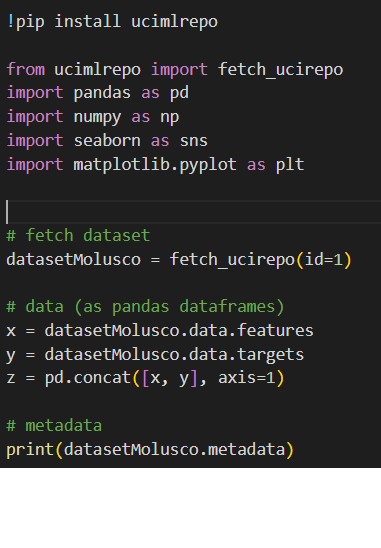

Abalone:
Image extracted from: https://www.treehugger.com/abalone-facts-5180643
In this case, we'll be working with a dataset containing information about a mollusk species, the abalone. The goal of this process is to provide an accurate prediction of the age of these mollusks (This dataset can be retrieved from UCI).
The dataset provided includes the following information:
- Sex: Male or Female(Binomial: F, M).
- Length: Longest shell measurement(Numerical).
- Diameter: Perpendicular to length(Numerical).
- Height: With meat in shell(Numerical).
- Whole weight: Whole abalone(Numerical).
- Shucked weight: Weight of meat(Numerical).
- Viscera weight: Gut weight after bleeding(Numerical).
- Shell weight: After being dried(Numerical).
- Rings: Number of rings(Numerical).
Data Preparation
As we can see, it's a dataset with a limited number of attributes. Initially, we wouldn't want to make significant alterations to these attributes before conducting the initial model training to observe the results. Subsequently, we can apply normalizations to specific variables to assess how it affects the algorithm's performance.
Something to note in this case is that there is no presence of missing values in any attribute, which is likely due to the scientific nature of the research. This information was obtained from the metadata provided for each variable in the dataset, visualized using the following code.
Since we are using a linear regression model, the 'Sex' variable does not lend itself to be used with this algorithm. In this particular case, as gender differences do not contribute significantly to the measurements used in this dataset, the decision was made to remove this column. However, it's important to note that in other cases, different approaches can be considered, such as transforming the gender column from categorical to numeric.
Another important aspect to consider is the presence of outliers in the dataset. In this case, the presence of outliers is not significant, and the decision was made to leave them in the dataset. However, in other cases, it may be necessary to remove them to avoid skewing the results. All variables exhibited unbiased distributions and showed little presence of outliers, which allowed us to proceed to the next step in the process.
Modelado
The modeling in this case is relatively straightforward. We will utilize a Python library for data splitting into training and testing sets. A linear regression model will be created, subsequently trained, evaluated, and appropriate performance metrics will be obtained. To be more specific, the chosen performance metrics are the mean absolute error and mean squared error.
The results obtained for this iteration of the modeling process were as follows:
Conclusion
The results obtained from this iteration of the modeling process provide valuable insights into the model's predictive capabilities. This process showcases a structured and effective methodology for predictive modeling, demonstrating that, in this particular case, a linear regression model can perform well in predicting the age of abalones. Further refinements and explorations can (or must) be pursued to enhance the model's performance and gain more insights into the underlying data.